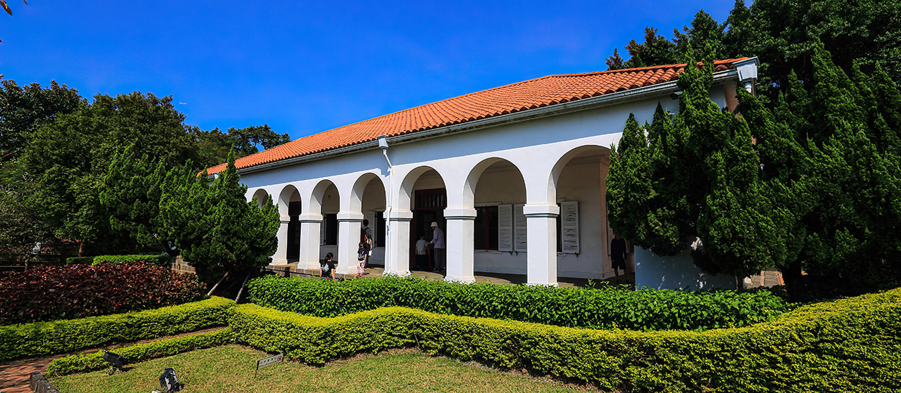

小白宮
「前清淡水關稅務司官邸」又名「小白宮」，興建於1862年，已有百年以上歷史，取名自外觀搶眼的西班牙式白色建築。位於昔稱的「砲臺埔」地區，為淡水河口數來第二個山崗位置的至高處。1860年代淡水開港通商，這裡成為洋人在淡水經商、貿易、居住的主要地區，當時興建許多異國風貌的建築，而小白宮即為其中的一棟，屬於殖民地式建築。
殖民地式建築之特徵有抬高地基、四周有類似迴廊之 Verandah（涼台）的設置、落地門窗、煙囪等等。在地人習慣由房屋外觀的顏色為西式建築命名，由於前清淡水關稅務司官邸室內外皆漆成白色，因而被在地人暱稱為「小白宮」。到小白宮一定要看整齊排列的「半圓拱門」，當陽光灑下來，白色建築會更顯潔白優雅，這片簡約的西班牙白堊迴廊式建築，極受寫真族青睞，也是「婚紗攝影」的熱門首選。在庭園的觀景台可鳥瞰淡水河美景，內部則展出官邸歷史與淡水地區過往照片，整體建築物以白為基底，搭配橘色屋頂，在藍天襯托下十分耀眼，加上圓拱式廊道設計，更增添許多浪漫風情。